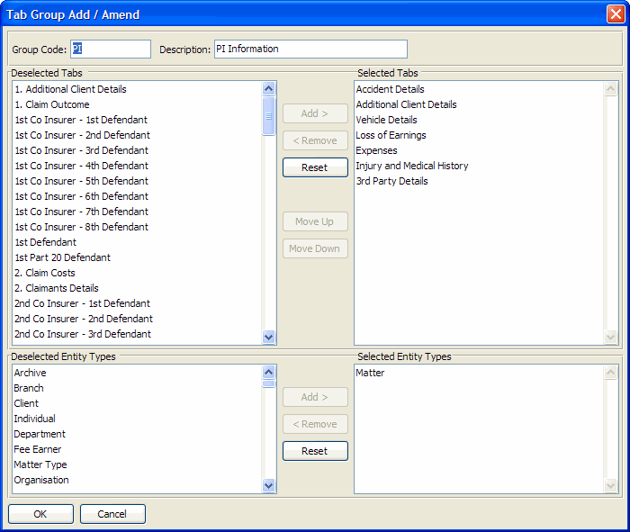

| Field Name | Data Type | Description |
| The type of entity to which this row of additional data is related. This field is used in combination with REFERENCE to uniquely identify the record that this data relates to. Valid values are: "MA" - matter* "CL" - client "CO" - contact "OR" - organisation "BR" - branch "USR" - User "DEPT" - department "FE" - fee earner "MT" - matter type "FIRM" - firm level *Note that additional data can also be stored against manual archives, but in this case TYPE is "MA" and REFERENCE contains a valid "archive only" matter code beginning with "_AR". | ||
| Entity reference to which this custom data belongs (matter code, client code, user id etc.) | ||
| Custom tab code | ||
| Custom tab-array entry number | ||
| Derived: Last Modified Date | ||
| Derived: Last Modified Time (seconds past midnight) | ||
| Derived: Last Modified User Id | ||
| Value of custom tab field 1 | ||
| Value of custom tab field 2 | ||
| Value of custom tab field 3 | ||
| Value of custom tab field 4 | ||
| Value of custom tab field 5 | ||
| Value of custom tab field 6 | ||
| Value of custom tab field 7 | ||
| Value of custom tab field 8 | ||
| Value of custom tab field 9 | ||
| Value of custom tab field 10 | ||
| Value of custom tab field 11 | ||
| Value of custom tab field 12 | ||
| Value of custom tab field 13 | ||
| Value of custom tab field 14 | ||
| Value of custom tab field 15 | ||
| Value of custom tab field 16 | ||
| Value of custom tab field 17 | ||
| Value of custom tab field 18 | ||
| Value of custom tab field 19 | ||
| Value of custom tab field 20 | ||
| Value of custom tab field 21 | ||
| Value of custom tab field 22 | ||
| Value of custom tab field 23 | ||
| Value of custom tab field 24 | ||
| Value of custom tab field 25 | ||
| Value of custom tab field 26 | ||
| Value of custom tab field 27 | ||
| Value of custom tab field 28 | ||
| Value of custom tab field 29 | ||
| Value of custom tab field 30 | ||
| Value of custom tab field 31 | ||
| Value of custom tab field 32 |
ADDDATA contains all custom data values for all entities. Custom tab definitions are assigned to custom tab groups, and these tab groups are defined as being applicable to certain types of entities in PM custom tab maintenance screen. Custom tab groups can then be assigned by the user to particular matters, clients, contacts etc.
All data values are stored as strings even though data entry is "masked" in accordance with the field definition you choose when setting the field up, e.g. as dates or numbers. Note that data can therefore only be retrieved and manipulated from the database as strings when accessing A.ADDDATA or PUB.ADDDATA directly. However by running the utility MaintainCustomViews.r additional database views can be created to access the data for specific custom tabs with fields defined as date values returned as date values when using an ODBC query. The utility creates these new views in your Progress database: the name of each view is "CUSTOM." followed by the custom tab code (e.g. "CUSTOM.MYTAB1").
In all the examples below an additional selection on ADDDATA.TAB-CODE can be applied to select the data belonging to a specific custom tab.
Retrieving custom data linked to a branch:"BR" -> ADDDATA.TYPE
BRANCH.CODE -> ADDDATA.REFERENCE
"USR" -> ADDDATA.TYPE
USR.USER-ID -> ADDDATA.REFERENCE
"DEPT" -> ADDDATA.TYPE
DEPARTMENT.DEPARTMENT-CODE -> ADDDATA.REFERENCE
"FE" -> ADDDATA.TYPE
FEETR.FEE-EARNER -> ADDDATA.REFERENCE
"MA" -> ADDDATA.TYPE
MATDB.MT-CODE -> ADDDATA.REFERENCE
"CL" -> ADDDATA.TYPE
CLIDB.CL-CODE -> ADDDATA.REFERENCE
"CO" -> ADDDATA.TYPE
CONTACTS.REFERENCE-CHAR -> ADDDATA.REFERENCE
"OR" -> ADDDATA.TYPE
ORGANISATION.REFERENCE-CHAR -> ADDDATA.REFERENCE
"MT" -> ADDDATA.TYPE
MATTYPE.MT-TYPE -> ADDDATA.REFERENCE